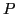
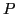

Next: Functions. Up: Variables and functions Previous: Interval of a variable. Contents Index
The origin being at  , layoff on the straight line the points
, layoff on the straight line the points
 and
and  corresponding to the numbers
corresponding to the numbers  and
and  . Also
let the point  correspond to a particular value of the variable
. Also
let the point  correspond to a particular value of the variable  .
Evidently the interval
.
Evidently the interval
 is
represented by the segment
is
represented by the segment  . Now as
. Now as  varies continuously
from
varies continuously
from  to
to  inclusive, i.e. through the interval
inclusive, i.e. through the interval
 , the point
generates the segment
, the point
generates the segment  .
.
david joyner 2008-08-11